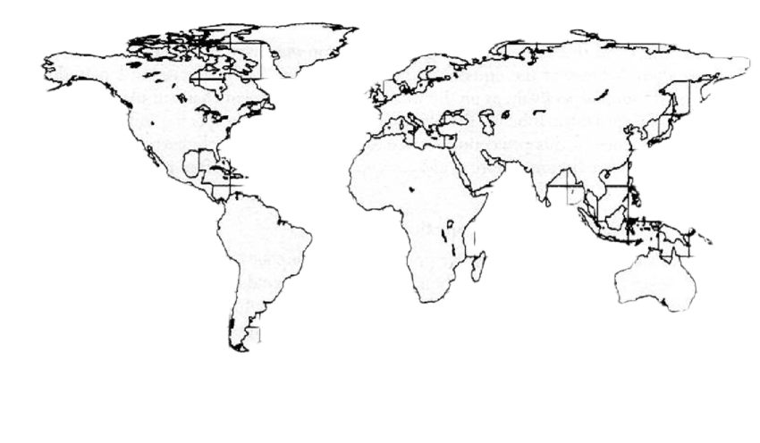

0%
Back to the beginning
History of the Practice
Trade Routes
Recipes
About this site
· APOTHECARY · APOTHECARY · APOTHECARY ·
· ORIGINS & TRADE ROUTES ·
Where the ingredients came from

Origin
Materia Medica
Trade Ingredients
☽